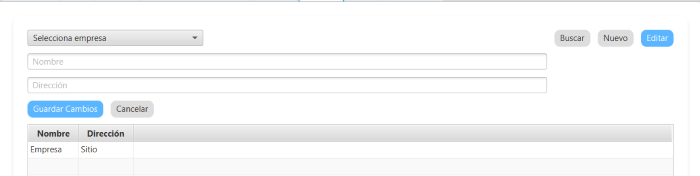

Para registrar una nueva empresa debes seleccionar "Nuevo" desde la pestaña de empresa, indicar su nombre y dirección, y luego darle al botón "Guardar"
Para editar los datos de la empresa, puedes seleccionar "Editar", elegir la empresa que quieras modificar, y actualizar sus datos.
Volver